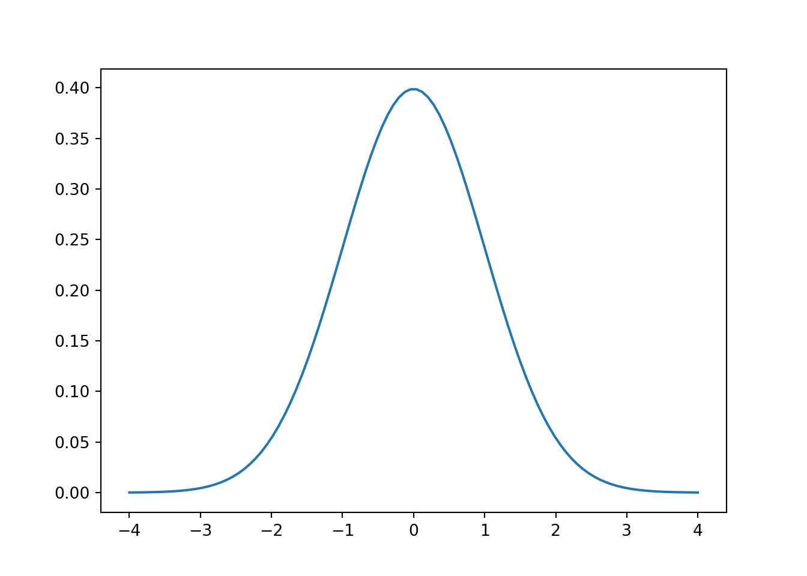
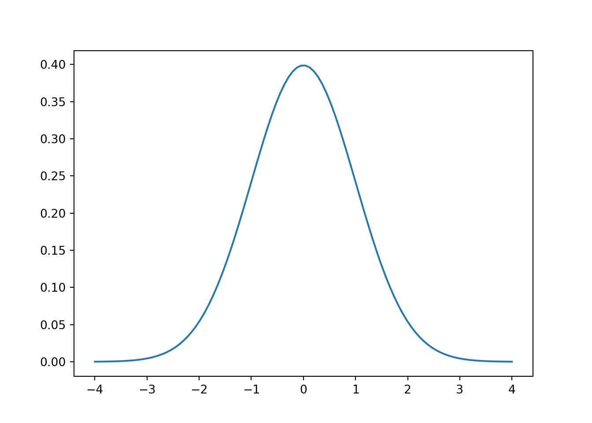
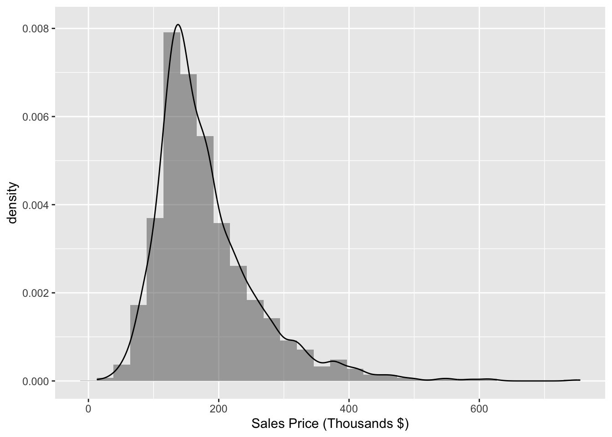
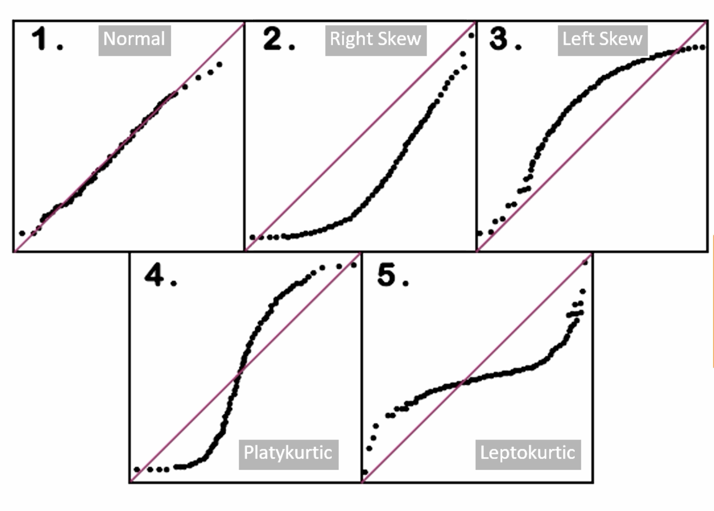
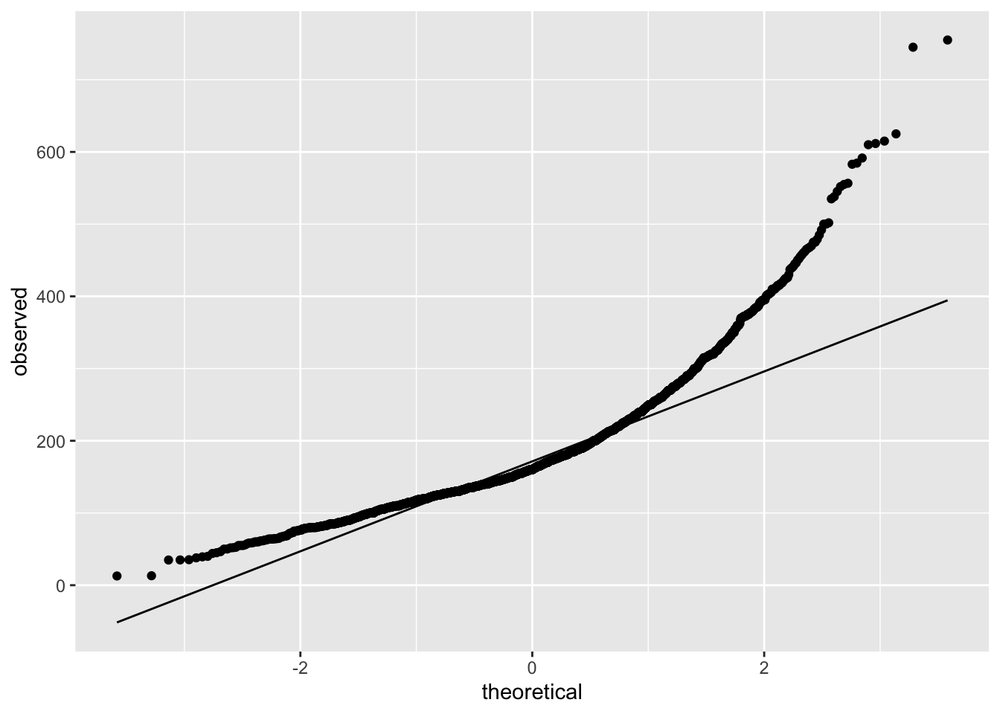
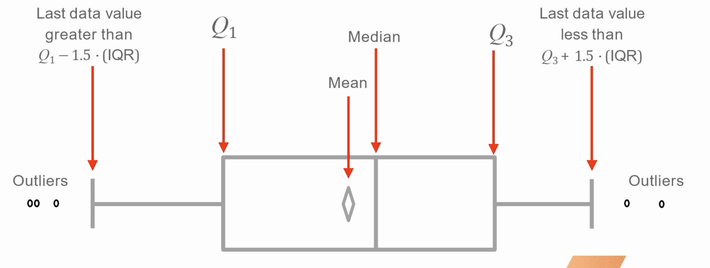
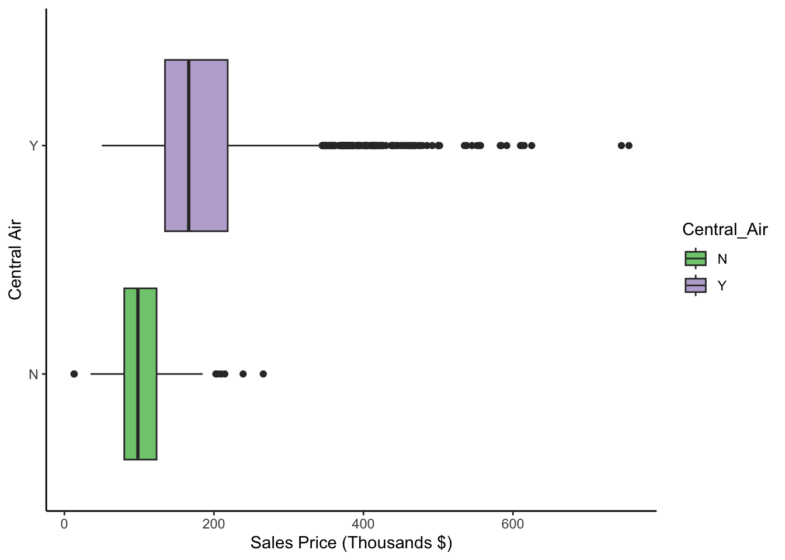

Code
from scipy.stats import norm
import numpy as np
import matplotlib.pyplot as plt
x = np.linspace(-4, 4, 100)
mean = 0
sd = 1
y = norm.pdf(x, mean, sd)
plt.plot(x, y)
Our variables are quantities or qualities of interest. These are also called:
Quantitative variables have a quantity value associated with them. These are intervals, numerics or ratios.
Categorical variables are inherently described by categories instead of quantities.
There are two types of categorical variables:
With ordinal variables, you can treat them as either nominal or quantitative. You have to make the decision.
Categorical Dummy Variables:
| Small | Medium | Large |
|---|---|---|
| 1 | 0 | 0 |
| 0 | 1 | 0 |
| 0 | 0 | 1 |
The levels are given values if treated quantitatively:
| Size | Size |
|---|---|
| S | 1 |
| M | 2 |
| L | 3 |
In addition, we also could do optimal scaling to represent the scale of the ordinal variables. This requires a careful definition of a “1-unit” change in the variable.
| Education | Education |
|---|---|
| No HS degree | 1 |
| GED | 2 |
| HS Diploma | 3 |
| Bachelors | 10 |
| Masters | 16 |
| PhD | 20 |
\[ \bar{x} = \frac{1}{n} \sum_{i=1}^n x_i \]
Middle value. 50th percentile. Unaffected by outliers. In a right-skew, median is lower than the mean. In a left-skew, median is higher than the mean.
Most frequent value. Typical for categorical data
Percentiles are a point, \(x_p\), in your data for which \(p\%\) of the data is \(\leq x_p\).
Quantiles are the same thing as percentiles. The 10th percentile is the 0.10 quantile.
Range is \(\text{max}(data) - \text{min}(data)\)
IQR is the difference between third and first quartile. What is the range of the middle 50% of data.
Dispersion of the data around the mean. Average squared deviation from the mean.
\[ s^2 = \frac{1}{n - 1} \sum_{i=1}^{n} (x_i - \bar{x})^2 \]
Modality is the number of humps a distribution has. A Normal distribution is unimodal.
Is the distribution symmetric? Or does it have a longer tail on one side?

Does the distribution have thicker/thinner tails than a Normal distribution with same mean and variance?
A leptokurtic distribution has more data in the tails than a Normal distribution.
A platykurtic distribution has less data in the tails than a Normal distribution.
This only makes sense if you have a symmetric distribution.
A Normal distribution is a distribution that is
from scipy.stats import norm
import numpy as np
import matplotlib.pyplot as plt
x = np.linspace(-4, 4, 100)
mean = 0
sd = 1
y = norm.pdf(x, mean, sd)
plt.plot(x, y)
Using the Ames Real Estate Data Set, we want to try to predict housing sales prices in Iowa. We will also use ggplot2 for visualization.
library(AmesHousing)
ames <- make_ordinal_ames()Each bar in the histogram represents a group of values (bin).
The height of the bar represents the frequency of percent of values in the bin. You can specify the number of width of the bins as desired.
library(ggplot2)
ggplot(ames, aes(x = Sale_Price / 1000)) +
geom_histogram(mapping = aes(y = after_stat(density)), alpha = 0.5) +
geom_density(alpha = 0.2) +
labs(x = "Sales Price (Thousands $)")`stat_bin()` using `bins = 30`. Pick better value with `binwidth`.
The distribution is right-skewed so the mean is greater than the median housing price.
Used to compare two distributions, typically to verify that a variable is approx. Normal.
Compare observed quantiles to theoretical quantiles of a Normal distribution with the same mean and variance.
If the points follow the line diagonal line, the distribution is Normal.

ggplot(ames, aes(sample = Sale_Price / 1000)) +
stat_qq() +
stat_qq_line() +
labs(x = "theoretical", y = "observed")

ggplot(ames, aes(y = Sale_Price / 1000, x = Central_Air, fill = Central_Air)) +
geom_boxplot() +
labs(y = "Sales Price (Thousands $)", x = "Central Air") +
scale_fill_brewer(palette = "Accent") +
theme_classic() +
coord_flip()
For symmetric distributions and particularly for the Normal distribution, it’s common to consider observations more than 3 standard deviations from the mean as anomalous.
Box plots define outliers as poitns that are \(1.5 \times IQR\) above the third quartile or less than \(1.5 \times IQR\) below the first quartile.
There are more definitions but these are the first couple we are considering now.